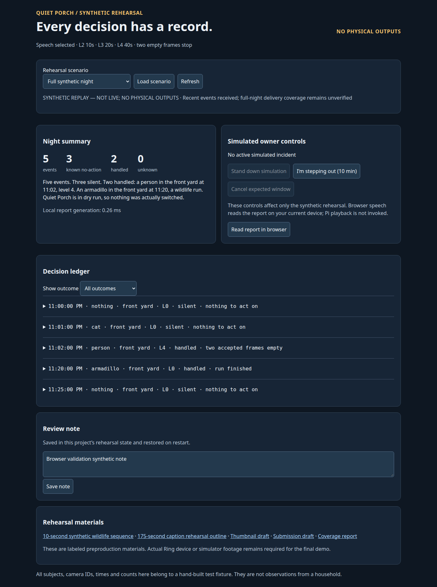

The LAN rehearsal renders correctly in installed Chromium. Fifteen focused rendered checks passed. This is synthetic-only validation; no hardware or external-service calls were made.
The earlier failure was a missing browser-provider connection to this delegated task, not a missing browser binary or a broken rehearsal. Computer Use lists zero apps and zero browsers; the desktop runtime helper also rejects the thread as non-local. ProBook has Firefox and cached Chromium, and the rehearsal user service is active with HTTP 200 at 10.0.0.46:3472. A queued tab-open request cannot establish that desktop connection.
For rendering validation, the installed Chromium runtime was launched headless through Playwright. This resolves the missing visual/workflow verification; it does not attach an interactive Codex browser provider.
Not tested: audible browser speech, real Surface hardware/browser, Pi playback, camera live view, sprinkler actuation. Desktop provider connection remains absent; no verified setting name or user-side repair procedure was exposed. User can independently open the LAN URL in the Surface browser; automation does not require that step now that headless verification works.
Exact checks · Repeatable local validation script · Desktop · Surface viewport · Mobile · No events · Unknown outcome · Second household
